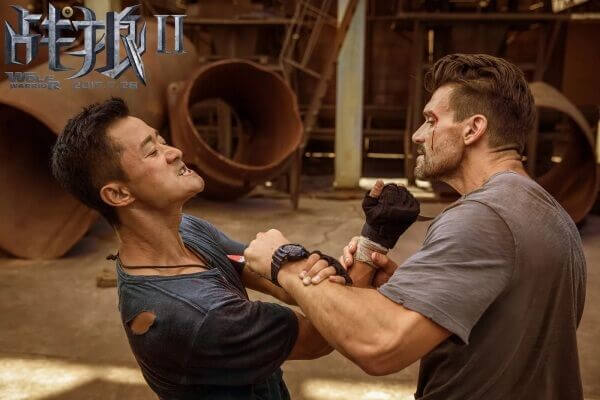
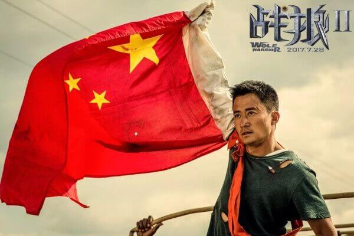
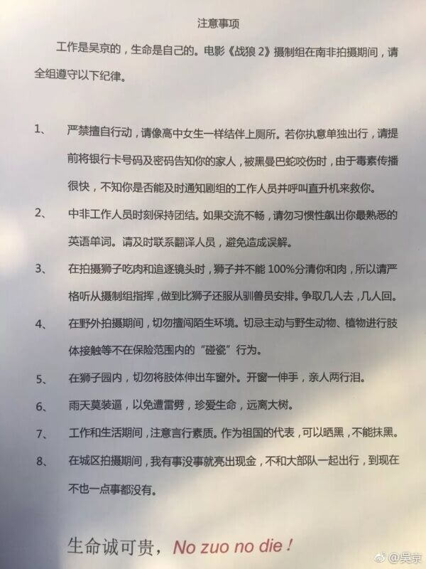

关于这部电影，由于我曾经看过个人感觉很僵硬的战狼1，所以我其实对这个第二部的印 象不太好。奈何微博，新闻上一致的好评，加上我朋友圈里各种观影过后的赞美之词，忍 住了看枪版的冲动，挨到周末才去电影院里看了这部算是有着主旋律的片子。
当然，我个人对这片子的还算是挺满意的。国产电影这几年的发展我们也是有目共睹，以 前我们吐槽的5毛特效，表演浮夸，场景搭建随意正在逐步的改变。不说剧情，就动作场 景的编排，战场炮火的特效，摄影镜头的切换，故事场景的几段切换。虽然还说不上能和 好莱坞大片相比，但已经不逊色太多了。
女主角不是很出名但是竟然没有出戏 。反而还有点大惊喜，在看这个电影之前，我对于女主并没有了解。原来以为真是一个外国的女演员。后面了解之后才发现，居然是中国人。

达康书记也是电影的一个惊喜，这电影的拍摄时间好像是在《人民的名义》之前，也算是为这电影添了不少看点。 一般像他这个年龄的演员不会轻易接这种戏的， 原因很简单， 年龄大了 之前又从来没有这种动作枪战戏的功底，很难完成。 如果砸了招牌被骂岂不得不偿失，像他这样的老戏骨会很看重自己的尊严和声誉的，所以他敢接这个角色凭这份胆量就已经让人非常敬佩了
还有不得不说的，就是这部片子对我们观影的这些国人的爱国情怀的一次熏陶。不管是影 片中的中国军舰不顾局势危险的撤侨行动，政府军和反叛军对扬着5星红旗的华资厂车队 的让步，还是影片最后中国护照本背面印着得那句话。虽然有些也只是电影编纂的和现实 有所区别的情节，但是不会像有些电影一样让人感觉很假，很尴尬，是真的会让人心潮澎 湃。
但是这种爱国情怀也产生了一个牢笼，让这电影只能局限于国内。说起这个，我想起了之 前看得一部战争片，血战钢锯岭。同样的战争片，不同国家的人（日本就不一定了）应该 都会有一种感觉。因为这是人文情怀，不同国籍，不同性别的人都会接受，才能走到世界 的舞台上，去让人感动。
虽然现在的中国的电影鲜肉当道，颜值为上。但战狼2的票房说明了，很多人内心还是更 加愿意支持对得起观众和粉丝的电影，也会认同和赞美这些认真在做电影的人。我们也很 庆幸有这些人在，不会让我们在挑选电影的时候陷入无片可看的境地。
PS:下面图片的文字请务必读完 保证比电影还精彩。
